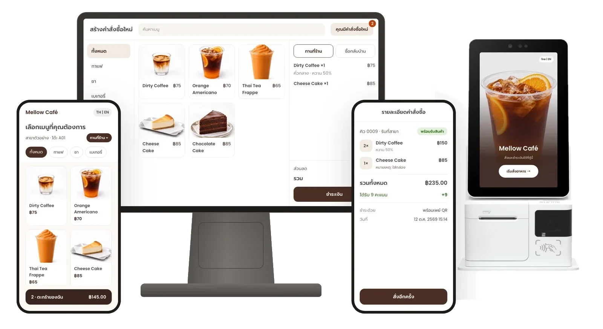

BIZ+ Digital Café Solution
ระบบร้านกาแฟที่ลูกค้าสั่งได้ 4 ทาง ทั้ง QR ที่โต๊ะ ตู้ kiosk LINE และหน้าเคาน์เตอร์ ทุกออเดอร์เข้า POS ก่อน แล้วต่อไปครัวและจุดรับ

หน้าจอวาดใหม่จาก flow ของระบบจริง ไม่ใช่ภาพหน้าจอจากระบบ ชื่อร้าน Mellow Café และข้อมูลทั้งหมดเป็นข้อมูลสมมติ
ปัญหาของลูกค้า 1 ข้อ และโอกาสทางธุรกิจ 2 ข้อ
ออเดอร์ที่สั่งผ่าน QR ต้องขึ้นที่ POS และจอครัว เปลี่ยนสถานะบนจอคิว ตัดสต็อก และบันทึกลงประวัติ LINE ของสมาชิกที่กรอกเบอร์ไว้ ถ้าจุดใดไม่ตรง ยอดในรายงานก็จะไม่ตรงกับเงินที่รับจริง
- 01สั่งแล้วไม่รู้ว่าออเดอร์ถึงไหนสั่งได้ 4 ช่องทาง แต่ต้องถามพนักงานหรือรอเรียกชื่อ ถึงจะรู้ว่าได้ของหรือยัง
- 02เปิดให้สมาชิกสั่งล่วงหน้าผ่าน LINEเป็นช่องทางที่ยังไม่เคยมี ออเดอร์ต้องผูกกับสาขาที่จะไปรับ และแต่ละสาขาเปิดปิดไม่พร้อมกัน
- 03ระบบเดียวต้องขายให้หลายร้านที่ทำงานไม่เหมือนกันบางร้านให้ดูเมนูอย่างเดียว บางร้านจดสต็อกไว้ที่อื่นก่อนบันทึกเข้าระบบ
ใครใช้ระบบ และต้องการอะไร
ลูกค้าใช้มือถือหรือตู้ พนักงานใช้แท็บเล็ต ครัวใช้จอแนวนอน เจ้าของร้านใช้เว็บ ทุกคนอ่านออเดอร์ชุดเดียวกัน
- 1ลูกค้าต้องรู้ว่าออเดอร์ถึงไหนสั่งเองจากโต๊ะ ตู้ หรือ LINE ไม่อยากเดินไปถามปัญหา 01ปัญหา 02
- 2พนักงานต้องไม่พลาดออเดอร์จากช่องทางไหนรับออเดอร์และเงินที่ POS ระหว่างมีลูกค้ารอปัญหา 01
- 3ครัวต้องเห็นคิวและเปลี่ยนสถานะได้ในครั้งเดียวครัวดูคิวแยกตามสถานะบนจอแนวนอนปัญหา 01
- 4เจ้าของร้านต้องรู้ว่าวันนี้ต้องจัดการอะไรดูยอดขายและสต็อกบนเว็บปัญหา 03
ทั้ง 3 ปัญหาเกิดจากออเดอร์ใบเดียวที่ผ่านหลายจอ ถ้าทุกจอเรียกสถานะเหมือนกัน และกฎของแต่ละร้านชัด ทุกคนก็ทำงานต่อกันได้
- ปัญหา 01ลูกค้าไม่รู้ว่าออเดอร์ถึงไหนสถานะออเดอร์ชุดเดียวทุกจอครัวกดครั้งเดียว จอคิวและมือถือลูกค้าเปลี่ยนตาม
- ปัญหา 02ช่องทางใหม่ต้องผูกกับสาขาเปิดมาที่สาขาใกล้สุดบอกทันทีว่าสาขาเปิดอยู่ไหม และสั่งไม่ได้ตอนร้านปิด
- ปัญหา 03ร้านทำงานต่างกันให้ร้านขายต่อได้ แล้วบอกว่าต้องแก้อะไรยอมให้สต็อกติดลบ และแดชบอร์ดบอกรายการที่ต้องปรับ
ลูกค้ารู้สถานะออเดอร์ ร้านได้ช่องทางใหม่ และระบบเดียวใช้ได้หลายร้าน
ก่อนออกแบบแต่ละแอป ต้องรู้ก่อนว่าออเดอร์ผ่านจอไหนบ้าง จึงไล่ Workflow ต่อ ↓
ไล่ Workflow: ออเดอร์หนึ่งใบ ผ่าน 6 จอ
ตามออเดอร์หนึ่งใบตั้งแต่ลูกค้าสั่งจนเจ้าของเห็นยอด ดูว่าแต่ละจอใช้สถานะไหน และถ้าขั้นไหนผิดพลาด ระบบควรทำอย่างไร
- 1สั่งและจ่ายลูกค้าสั่งจาก QR, kiosk, LINE หรือเคาน์เตอร์ หน้าชำระเงินแสดงเลขออเดอร์Business Ruleออเดอร์มีเลขตั้งแต่หน้าชำระเงิน
- 2สั่งหน้าร้านลูกค้าเลือกเมนูจากภาพ และตัวเลือกที่ต้องเลือกให้ครบ
- 3สั่งล่วงหน้าสมาชิก LINEเปิดมาที่สาขาใกล้สุด สั่งได้เมื่อสาขาเปิดปัญหา 02ต้องผูกกับสาขา และสาขาเปิดไม่เท่ากัน
- 4รับออเดอร์พนักงานทุกช่องทางเข้า POS ก่อน แล้วส่งต่อครัวBusiness Ruleทุกออเดอร์เข้า POS ก่อน
- 5เตรียมและรับครัว · ลูกค้าครัวกดสถานะ จอคิวบอกว่าพร้อมรับปัญหา 01ลูกค้าต้องถามว่าเสร็จหรือยัง
- 6ดูยอดและสต็อกเจ้าของร้านเห็นยอดขาย สต็อก และสิ่งที่ต้องจัดการวันนี้ปัญหา 03ร้านจดสต็อกที่อื่นก่อน
ลูกค้าเห็นสถานะออเดอร์เอง ไม่ต้องเดินไปถาม
เดิมสั่งได้ 4 ทาง แต่ลูกค้าต้องถามพนักงานหรือรอเรียกชื่อ เพื่อรู้ว่าออเดอร์เสร็จหรือยัง
- สถานะออเดอร์ชุดเดียวทุกจอรอชำระเงิน → กำลังเตรียม → พร้อมรับสินค้า → เสร็จสิ้น ตกลงชื่อและสีก่อนออกแบบแต่ละแอปช่วยลด ความสับสนว่าออเดอร์อยู่ขั้นไหน ระหว่างลูกค้า พนักงาน และครัวหลักการ · Consistency and Standards (Nielsen ข้อ 4)
- รองรับกรณีผิดพลาดเช่น payment failed, timeout และ refund โดย kiosk กลับหน้าแรกเมื่อหมดเวลาจ่ายช่วยลด ออเดอร์ค้างที่ไม่มีใครรู้หลักการ · Error Prevention (Nielsen ข้อ 5)
- ครัวกดครั้งเดียว ทุกจอเปลี่ยนตามจอคิวและมือถือลูกค้าเปลี่ยนสถานะทันทีช่วยลด การเดินไปถามที่เคาน์เตอร์หลักการ · Visibility of System Status (Nielsen ข้อ 1)
- จอคิวตัวเลขใหญ่แยก "กำลังเตรียม" กับ "พร้อมรับ" อ่านได้จากระยะไกลช่วยลด การเพ่งหาเลขคิวของตัวเองหลักการ · Visual Hierarchy · Glanceability
- POS แจ้งเตือนออเดอร์ใหม่ป้าย "มีคำสั่งซื้อใหม่" บนหัวจอ ไม่ต้องเปลี่ยนหน้าระหว่างรับออเดอร์ช่วยลด ออเดอร์จาก QR, kiosk หรือ LINE ที่ถูกมองข้ามหลักการ · Visibility of System Status (Nielsen ข้อ 1)
- ที่มา
- ออเดอร์เดียวแสดงบน 3 จอ: ครัว จอคิว มือถือลูกค้า
- ตัดสินใจ
- กำหนด 4 สถานะ ชื่อและสีเดียวกันทุกจอ แต่ละจอแสดงเฉพาะสถานะที่ต้องใช้
- ไม่เลือก
- ให้แต่ละจอใช้คำของตัวเอง
- เพราะ
- คำต่างกัน ลูกค้าจะถามพนักงาน และพนักงานต้องเดินไปดูที่ครัว
สรุปในประโยคเดียวลูกค้าเคยต้องถามพนักงานว่าออเดอร์เสร็จหรือยัง ดังนั้นทุกจอจึงใช้สถานะออเดอร์ชุดเดียวกัน และครัวกดครั้งเดียวทุกจอเปลี่ยนตาม เพื่อให้ลูกค้า พนักงาน และครัวเห็นคำเดียวกัน โดยไม่ต้องเดินไปถาม
สั่งล่วงหน้าผ่าน LINE โดยไม่สั่งตอนร้านปิด
เดิมออเดอร์จาก LINE ต้องผูกกับสาขาที่รับ และแต่ละสาขาเปิดปิดไม่เท่ากัน
- ไม่ต้องเลือกสาขาก่อนเปิดมาที่สาขาใกล้สุดอัตโนมัติ ลูกค้าดูเมนูได้ทันทีช่วยลด ขั้นตอนก่อนเห็นเมนูหลักการ · Flexibility and Efficiency of Use (Nielsen ข้อ 7)
- ป้ายสาขาปิด พร้อมเวลาเปิดครั้งถัดไปเมื่อสาขาปิด ป้ายสีแดงบอกเวลาเปิด และปุ่มเพิ่มสินค้าหายไปช่วยลด ออเดอร์ที่สั่งตอนร้านปิดหลักการ · Error Prevention (Nielsen ข้อ 5)
- หยุดรับออเดอร์ก่อนร้านปิดตามเวลาที่ร้านตั้งเองช่วยลด ออเดอร์ที่ร้านทำไม่ทันก่อนปิดหลักการ · Constraints (Don Norman)
- หลังสั่ง ทุกอย่างอยู่หน้าเดียวสถานะ แต้มที่ได้ และปุ่มสั่งซ้ำช่วยลด การสลับหน้าเพื่อดูสถานะหลักการ · Recognition rather than Recall (Nielsen ข้อ 6)
- ที่มา
- แต่ละสาขาเปิดปิดไม่พร้อมกัน
- ตัดสินใจ
- เลือกสาขาใกล้สุดให้ และแสดงสถานะร้านเหนือชื่อสาขา
- ไม่เลือก
- ให้เลือกสาขาก่อนเห็นเมนู
- เพราะ
- ลูกค้าส่วนมากรับที่สาขาใกล้ตัว จึงไม่ต้องเพิ่มขั้นก่อนเห็นเมนู
สรุปในประโยคเดียวออเดอร์จาก LINE ต้องผูกกับสาขา และสาขาเปิดไม่เท่ากัน ดังนั้นแอปจึงเปิดมาที่สาขาใกล้สุด และบอกทันทีว่าสาขาเปิดอยู่ไหม เพื่อให้ลูกค้าสั่งได้เฉพาะตอนที่ร้านรับได้จริง
ระบบเดียว ใช้ได้กับร้านที่ทำงานต่างกัน
เดิมบางร้านแสดงแค่เมนู บางร้านจดสต็อกที่อื่นก่อน แล้วค่อยบันทึกเข้าระบบ
- ร้านขายต่อได้แม้สต็อกยังไม่อัปเดตยอมให้สต็อกติดลบ แทนการบล็อกการขายเมื่อสต็อกเป็น 0 เพราะร้านจดสต็อกที่อื่นก่อนช่วยลด การขายของที่มีอยู่จริงไม่ได้หลักการ · Match between System and the Real World (Nielsen ข้อ 2)
- แดชบอร์ดเริ่มจากสิ่งที่ต้องจัดการ"ต้องจัดการวันนี้" รวมสต็อกติดลบ ใกล้หมด และออเดอร์ค้างจ่าย แต่ละแถวพาไปหน้าที่แก้ได้ช่วยลด การไล่หาว่าต้องแก้อะไรก่อนหลักการ · Visibility of System Status · Recognition rather than Recall
- แท็บสต็อกแยกสถานะใกล้หมด หมด และติดลบ แถวติดลบบอกจำนวนที่ขายเกินช่วยลด การนับของทั้งร้านโดยไม่รู้ว่าต้องเริ่มที่ไหนหลักการ · Pre-attentive Attributes
- ร้านเปิดปิดฟีเจอร์เองได้เช่น ปิดรับสั่งล่วงหน้า โดยลูกค้ายังดูเมนูได้ช่วยลด การบังคับทุกร้านให้ทำงานแบบเดียวกันหลักการ · User Control and Freedom (Nielsen ข้อ 3)
- ที่มา
- ร้านจดสต็อกที่อื่นก่อน แล้วค่อยบันทึกเข้าระบบ
- ตัดสินใจ
- ยอมให้สต็อกติดลบ และแยกแท็บติดลบไว้
- ไม่เลือก
- บล็อกการขายเมื่อสต็อกเป็น 0
- เพราะ
- ถ้าบล็อก หน้าร้านจะขายของที่มีอยู่จริงไม่ได้
- ที่มา
- เจ้าของเปิดดูสั้น ๆ ระหว่างวัน ไม่ได้นั่งอ่านรายงาน
- ตัดสินใจ
- วางสิ่งที่ต้องจัดการไว้บน ยอดขายไว้ล่าง
- ไม่เลือก
- เริ่มหน้าด้วยกราฟยอดขาย
- เพราะ
- กราฟบอกว่าเกิดอะไรขึ้น แต่ไม่บอกว่าต้องทำอะไรต่อ
สรุปในประโยคเดียวร้านจดสต็อกที่อื่นก่อนแล้วค่อยบันทึก ดังนั้นระบบจึงยอมให้สต็อกติดลบ และแดชบอร์ดเปิดมาเห็นรายการที่ต้องปรับ เพื่อให้ร้านขายต่อได้ และเจ้าของรู้ทันทีว่าต้องแก้อะไร